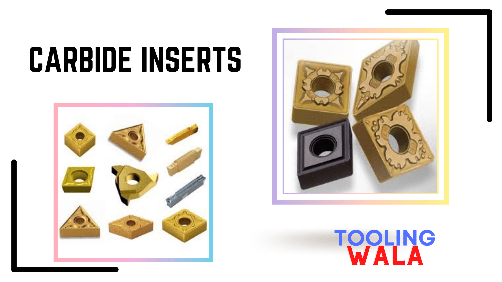
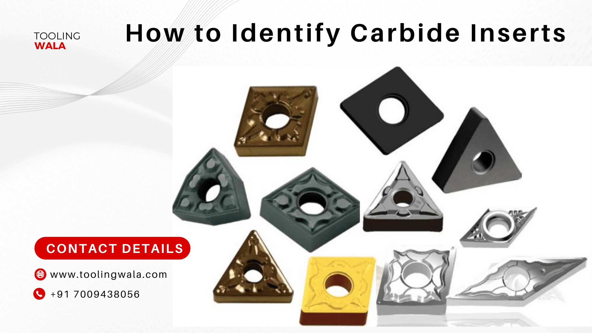
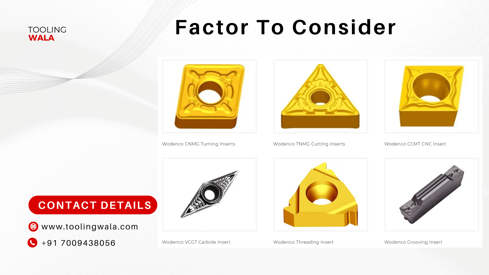
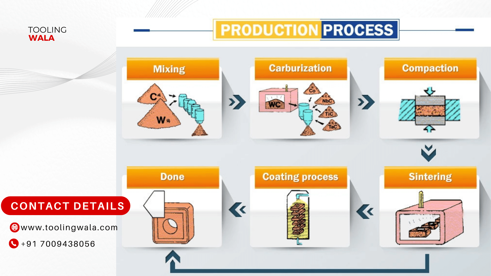

This guide covers all the fundamental aspects you should consider when choosing the right carbide inserts.
From definition, properties, features, material grade to certification – you will find all information you’re looking for right here.
Let’s dive right in:
I. What are Carbide Inserts?
They are cutting tools used to accurately machine different metals such as cast iron, steel, carbon, non-ferrous metals, and high-temperature alloys.
Carbide inserts are indexable, which implies you can exchange, rotate or flip them without disturbing general cutting tool geometry.
Also, these tools are removable, meaning they are not welded or brazed to the tool body.
You can use these cutting tools at high speed, which allows for faster machining resulting in better material surface finishes.
The importance is making sure you select the appropriate carbide insert for respective material you’re cutting.
It helps in reducing cases of damaging the insert, the machines as well as the workplace.
These cutting tools come in a large variety of styles, sizes, and grades.

Figure 2 Types of carbide insert
Ideally, you can identify carbide insert using Turning Tool ISO code system.
It is a relatively straightforward shorthand system covering all elements you ought to know.
The essence of identifying carbide inserts using the system is it allows you to know precisely the piece you need when ordering.
This ISO code is based on a metric system with measurements in millimeters.
Actual carbide inserts identification process starts with attaching a particular code to it.
These codes are comprehensive systems facilitating easy identification of the right tool and not necessarily random letters and numbers.
Every letter or number in the code correlates to the following phrases;
- Insert clamping method
- Insert shape
- Holder style
- Insert clearance angle
- Hand of a tool holder
- Shank height
- Shank width
- Length of holder
- Cutting edge length
Each element influences the coding process hence making it easy to identify the carbide insert.
Once you understand the Turing Tool ISO system, you can quickly identify the right carbide insert.
The system provides a universal framework you can use to identify the exact carbide insert you’re using, or you want to buy.
It becomes simple to select the right carbide insert if you know the specific identification code.
III. Types of Carbide Inserts
Carbide inserts come in a large variety suited for different applications.
The common types include the following:
- Turning carbide inserts
- Threading carbide inserts
- Grooving carbide inserts
- Milling carbide inserts
- Drilling carbide inserts
- Boring carbide inserts
IV. Main Considerations for Selecting Right Carbide Inserts
When choosing the correct carbide inserts, there are several parameters you must consider.
Ultimately, such factors determine whether you’ll attain good machining performance and chip control for desirable results.
Here are the main parameters to have in mind;
a) Carbide Insert Geometry
Geometries can be divided into three primary styles based on mode of operation.
These styles include
- Roughing – It is high depth of cut and feed rate combinations suitable mostly for operations, which require highest edge security.
- Medium – Ideal for medium operations to light roughing. Feed rate and wide range of cut depth combinations.
- Finishing – Suitable for operations at light depths of cut and relatively low feed rates. Fit for operations requiring low cutting forces.
b) Carbide Insert Grade
Primarily, the insert grade is usually determined based on the following;
- Component material
- Method of operation (Finishing, medium, roughing)
- Machining conditions, i.e., good, average, or difficult.
Technically, the tool geometry and grade complement each other.
For instance, toughness of a grade can compensate for a lack of strength in a carbide insert geometry.
c) Carbide Insert Shape
When selecting carbide shape, it is important to ensure it is a relatively required tool entering angle accessibility.
Always consider choosing the largest possible nose angle to provide insert and reliability.
However, this must be balanced against cuts variation that needs to be performed.
Ideally, a large nose angle is sturdy but requires more machine power. Also, it has a higher tendency for vibration.
On the other hand, a small nose angle is relatively weak and has small cutting edge engagement.
Therefore, it tends to be more sensitive to the varied effects of heat.
d) Carbide Insert Size
Always select a carbide insert size based on the specific application needs and space for cutting tools in the application.
Relatively large insert size provides better stability.
Heavy machining requires a carbide insert size of above IC 25mm.
When choosing the right size of carbide insert, always determine the largest depth of cut.
Consider the cutting length while determining the tool holder entering tool, depth of cut, and machine specification.
e) Material to be Machined
Carbide inserts are used for machining different types of materials.
Thus you must ensure you are choosing the right tool suitable for the specific material.
Some of these materials include the following;
- Aluminum
- Bronze
- Hardened tool steel
- Soft tool steel
- Stainless steel
- Cast Iron
- Non-ferrous metals
- Heat-resistant alloy. Titanium alloy
- High hardness materials
f) Type of Machine Tool
Machine tools used with carbide inserts also come in a large variety.
The commonly used ones include the following; Swiss-type, CNC lathe, 5 axis, turning machine, lathe machine, conventional VMC among others.
V. Factors to Consider When Choosing Right Carbide Inserts Manufacturer
Here are the fundamental elements you need to consider when selecting a suitable carbide inserts manufacturer?
Figure 3 Carbide inserts
* Rich Experience
Always go for a company with relative experience in this industry.
Ideally, a manufacturer with rich experience is an added advantage since you are certain of getting the right type of tool for your needs.
* Advanced Equipment
An ideal carbide inserts company should have excellent machinery and facilities for manufacturing these tools.
Consider a manufacturer investing reasonably in R&D, skillful human resources, and a high CNC production line.
* Broad Variety
Different carbide inserts applications require different inserts shapes, sizes, and designs.
Finding a manufacturer with the capacity to produce a large variety is advantageous since it enhances convenience.
Also, it makes it easy for you to determine the right type, which suits your specific tooling application demands.
* Fast Turnaround Time
You must look into the average lead time a manufacturer takes to produce carbide inserts, all factors constant.
Choose a company with a dependable and high-quality supply chain. This ensures short delivery times with assured quality service.
* Quality Assurance
Typically, all carbide inserts manufacturers must comply with specific quality standards depending on the target market.
Always choose a company that conforms to all the necessary quality assurance standards accordingly.
* After-sales Services
Use of carbide inserts can be a bit technical given it involves use of different machines hence requires different settings.
Therefore, you can consider a manufacturer who is reliable and ready to offer well-informed suggestions on the working procedures of these tools.
You may also consider a company that can send its representatives to understand the challenges you could be facing with the tools.
* ANSI Designations of Right Carbide Inserts
The American National Standards Institute (ANSI) developed a coding system consisting of numbers and letters.
Essentially, the alphanumerical describes the dimensions, shapes, and other fundamental parameters of carbide inserts.
* Insert Shape
Ideally, carbide inserts are manufactured in a variety of designs, sizes, shapes, and thicknesses.
There are 16 standard shapes of indexable inserts.
Each of these shapes is identified by capital letters.
The shape can be round as a way of maximizing edge strength.
Also, it can be diamond-shaped to enable sharp points to cut fine features.
Moreover, the shape can be octagonal to increase the number of different edges applied as a single edge after one wears out.
For instance, A symbolizes, parallelogram 85°, C stands for diamond 80°, and H means Hexagon.
* Clearances
It is also referred to as relief angle value.
These angles are the difference from 90° measured in a plane normal to cutting edge derived from angle between flank and insert’s top surface.
Many carbide inserts have drafted faces on the walls.
Even so, clearance prevents carbide inserts’ walls from rubbing against the part that will give inferior machining.
But turning insert with a 0° clearance angle is commonly used for rough machining.
ANSI B212.12-1991 standard describes nine relief angles, all denoted by capital letters.
However, one more capital O was added on ANSI B212.4-2002 standard.
It denotes other relief angles for new designs of indexable inserts.
* Tolerance
Mostly describes the level of precision of the carbide insert during machining process.
Fourteen tolerance classes control indexability of carbide inserts.
Letters A, B, and T symbolize tolerances on dimensions (± from nominal).
Dimension A is the nominal inscribed circle (I.C) of the carbide insert.
On the other hand, dimension T is the thickness of the insert.
Dimension B is the carbide insert height for triangle, pentagon, and trigon shapes.
For the rest of polygons, dimension B denotes the distance measured along the bisector of round-off corner angle and gage roll of nominal I.C
* Type
This element is denoted by a capital letter showing the differences in design of the carbide insert.
Some of these differences include countersinks, existence of fixing holes, and special features on rake surfaces.
* Size
It is the numeric value describing the cutting edge length of the carbide insert.
Size is denoted by a one or two-digit number, which indicates the value of inscribed circle.
This position also designates the number of eighths of an inch in the I.C nominal size.
On rectangular and parallelogram length and width dimensions
* Thickness
This is the value, which describes the thickness of the insert.
It is the sixth position with a significant one or two-digit number denoting the number of sixteenths of an inch thickness of carbide insert.
However, it can be a one-digit number when the number of sixteenths of an inch in the thickness is a whole number.
* Cutting Point Configuration
It describes the nose radius of the carbide insert.
To reduce unnecessary vibration, it is recommended to select carbide inserts with a nose radius smaller than depth of cut.
Other equally important positions include; edge preparation, hand and facet size.
* Uses of Carbide Inserts
The uses of Carbide inserts are wide-ranging and cut across various applications revolving around metal machining.
Even so, the actual use of these tools is dependent on several factors such as geometries, cutting edge, and mode of operation.
Some of the common carbide inserts include the following;
- Threading
- Drilling
- Grooving
- Boring
- Turning
- Cutoff and parting
- Milling
- Hobbing
- Cutting
VI. How Carbide Inserts are Manufactured
Carbide inserts are manufactured in various shapes of geometric shapes tailored to every application.
Therefore, the manufacturing process is quite intensive to ensure accuracy and dimension is attained accordingly.
Here are the steps involved in making these cutting tools:
Figure 4 Carbide inserts manufacturing process
The insert is mainly made from tungsten carbide and cobalt in different proportions, and the original form of the raw material is powder. The prepared raw materials are placed in containers weighing several hundred kilograms to produce different powders. In the workshop, dry raw materials are mixed with ethanol and water to form a mixed solvent, which is a gray pulp with a consistency similar to yogurt. After the pulp is dried, the sample is sent to the laboratory for quality inspection. These powders are composed of many particles with a diameter of 20-200μm, which are very small (the diameter of a hair is 50-60μm).
* Container
These powders are packed in a drum with a volume of about 80 kg and transmitted to the punching machine used to manufacture the inserts. The operator puts the stamp dies (dies for stamping different inserts) into the machine tool and debugs them, and then enter the order numbers into the computer. After the above steps, the dies will be filled with powder according to the order information. The pressure of every insert stamping is 12 tons, and the weight of every insert will be weighted by the machine tool under the observation of the operator. At this stage, the inserts are very fragile and easy to break.
* Insert Stamping Machine and Stamped Inserts
The stamped inserts need to be heated by a sintering furnace to harden them. The sintering furnace can process thousands of inserts at a time. The stamped insert powder is heated to about 1,500°C in a process of up to 13 hours and melted into cemented carbide, a material with extremely high hardness. The shrinkage ratio of the sintering process is about 50%, so the insert size after sintering is only half of the original size.
* Sintering Furnace
After the quality inspection is completed, the top and bottom of the inserts will be ground to the required thickness. Because cemented carbide is very hard, it needs to be ground with industrial diamond.
* Complete Cycle Grinding
After reaching the required thickness, further grinding is required to obtain precise geometry and sizes. A 6-axis grinding plate is used to meet extremely strict tolerance requirements.
* Passivation Workshop
After grinding, the inserts will be cleaned, passivated and coated. To avoid any grease or dust, gloves must be worn when handling the inserts at this stage. The inserts are placed on the holder of the turntable, and then sent to a coating furnace with a lower pressure for coating. The blades show different colors after coating.
* Coating equipment
The completion of the coating means that the production process of the blade has been completed. Then they will be sent to the inspection room again for the last procedure. Before packaging, the inspection staff will carefully inspect all the working parts of the inserts through a high-definition electronic magnifying glass to ensure that the quality meets the requirements, check for bruises, cracks, defects, etc., and check the drawings and batch numbers. After the inspection, the inserts will be sent to the packaging workshop, marked with correct materials with a laser, and then they will be packed in a labeled packaging box. Finally, the packed inserts will be put into the warehouse. The staff will record and filed all the products and specifications in the computer. The whole manufacturing process is finished.
VII. Cost of Purchasing Carbide Inserts
When purchasing carbide inserts, the price is one of the fundamental parameters to consider.
Of course, the actual cost of these components is determined by a host of variables.
For instance, the specific type of carbide inserts you are buying influences the precise cost you’ll pay when purchasing.
This is from the perspective of geometry, shape, size, and the grade of the component.
Another determinant element of carbide inserts cost is quantity.
Most manufacturers usually provide better discounts on larger volumes than on smaller volumes.
Moreover, the specific material used for manufacturing the carbide inserts also determines the actual cost.
These components are manufactured from a wide range of material grades. Thus the price is likely to vary based on the quality of the particular material.
Also, the specific manufacturer you are purchasing from determines the cost of buying carbide inserts.
Of course, different companies have different pricing policies as far as purchasing these components is concerned. Wodenco guarantee to give customers the best price on the basis of the best quality.
VIII. Carbide Insert Materials
The design configurations of these carbide inserts comprise a body with replaceable cutting elements thus, known as indexable inserts.
Generally, the tool material must be harder than workpiece material to work on the workpiece.
The essence is to ensure the material can withstand thermal and mechanical loads as well as oxidation.
Moreover, the tool materials must meet the specific appropriate requirements of strength, hardness, thermal and oxidation resistance.
It helps in ensuring that the tool life acceptable within the required standards.
Ordinarily, we produce different types of various materials depending on the desired tool application.
Therefore, when selecting the ideal tool material, it is important to consider the specific intended use.
Carbide is the main material used for manufacturing carbide inserts.
However, there are a variety of tool material groups used for producing different carbide inserts.
Some of these materials include the following;
- Cemented carbide
- High-speed steel (HSS)
- Cermet
- Ceramics
- Silicon nitride
- Cubic boron nitride
- polycrystalline diamond (PCD)
The main types of cemented carbide used to manufacture inserts include tungsten, titanium carbide.
Each group features different types, commonly known as tool material grades or simply grades, tantalum carbide, and tungsten carbide.
IX. Carbide Insert Tools & Accessories
When using carbide inserts, there are other accessories, which are equally fundamental in ensuring you attain the best results.
These tools and accessories are always used in conjunction with the carbide inserts during a specific workpiece operation.
The common ones include the following;
Seat – It refers to a piece of carbide similar size to the insert it supports. Usually, it is placed between the insert and the bottom of the packet, where the carbide insert fits in a tool holder.
Holders – This component supports carbide inserts to ensure it stays strong and rigid to minimize deflection and possible vibration during operation.
Boring bars – They refer to cylindrical bars for internal machining, specifically for producing precise holes on workpieces.
You can find them in different materials such as steel, solid carbide, and carbide reinforced steel.
Drill – It is a cylindrical shaft with a conical cutting tip with one or more helical flutes designed to evacuate chips out of the workpiece.
X. How Positive and Negative Carbide Inserts Compare
Figure 5 Wodenco Carbide inserts
The main difference between positive and negative carbide inserts lies in the clearance angle.
Primarily, negative carbide inserts have zero degree clearance angle. The positive inserts, on the other hand, always have a clearance angle ranging between 1-90°.
Of course, in the inserts’ codes, the first letter denotes the insert shape while the second letter of the code specifies clearance angle.
A carbide insert with code CCMT120206 on the description chart shows that the second letter “C” implying its clearance angle is 7°.
In this case, the angle is more than o° hence making it a positive carbide insert.
Similarly, an insert with coder VNMG160804 shows the second letter is “N.”
From the description chart, you’ll find “N,” the clearance angle is 0° implying it is a negative carbide insert.
The bottom line is that a carbide insert code with letter “N” directly means it is a carbide insert.
On the other hand, all other carbide inserts without letter “N” at their second position are positive inserts.
Some features of the positive carbide inserts features include single-sided, side clearance, and low cutting forces.
It is also the ideal choice for internal turning and external turning of relatively slender components.
Contrarily, negative carbide inserts feature double or single-sided, zero-clearance, heavy cutting conditions, and high edge strength.
XI. Carbide Inserts Coating Processes and Materials
Coating carbide inserts is an integral element in enhancing the effectiveness, performance, and durability of these cutting tools.
When you buy coated carbide inserts, you can be certain of a tool with improved wear-resistance and enabled high speeds and feeds.
However, using the right type of coating is what guarantees you desirable results.
There are two main methods utilized for coating, which include Chemical Vapor Deposition (CVD) and Physical Vapor Deposition (PVD).
CVD coating is based on chemical reactions in a relatively vaporized medium.
On the other hand, PVD utilizes material spluttering.
The PVD process is a comparatively low-temperature process offering a finer crack-resistant grain structure with a low coefficient of friction.
Consequently, PVD-coated carbide inserts can have sharper cutting edges.
The deposition processing temperature distinguishes PVD and CVD coatings.
Technology development enables both CVD and PVD to be combined for coating cemented carbides to regulate coating properties.
Characteristically, CVD coating types have excellent build-up edge resistance and effective at lower speeds.
Also, they are excellent on gummy materials and for threading and cut-off operations. Moreover, this coating type makes it easy to identify the specific carbide insert corners that have been used.
PVD coating types, on the other hand, are effective in high-temperature alloys, stainless steel, and end mills.
You can use it on a broad range of applications, including turning, milling, and drilling among others.
XII. Carbide Inserts Standard Certifications
They are quite a number both at the national and international levels.
Mostly, the specific standard certification for carbide inserts is based on the particular target market.
Nonetheless, the common applications include the following:
ISO 883:2013
This standard specifies the dimension of indexable carbide inserts with rounded corners without fixing holes.
Intention of such inserts is primarily, to be mounted by top clamping on boring and tuning tools.
ANSI B212.4-2002
American National Standard Institute oversees development of voluntary consensus for different products, including carbide inserts.
In particular, ANSI B212.4-2002 describes the specifications of indexable inserts, including the minimum requirements for producing one.
CE Certification
It is a mark of quality standard confirming carbide inserts’ conformity to outlined health, safety, and environmental requirements.
This standard certification is common for products in the European Union market. However, they are also applicable in other markets too.
XIII. Best Shipping Method for Carbide Inserts
When importing carbide inserts from China, you can use different shipping methods to deliver them to your destination.
Mostly, the ideal shipping method would be dependent on your preference and budget.
However, carbide inserts are relatively lightweight.
Therefore, the best shipping method to consider would be air freight.
It is relatively affordable, safer, and more convenient for shipping these items. Additionally, it also takes a few days to receive your shipment.
Also, you may consider express shipping, especially if you are in urgent need of these items.
Express shipping is more expensive than air freight. But you are guaranteed to get the shipment within 72 hours at your preferred drop-off point.
At Tooling-Wala, we focus in machining very precise carbide inserts, using high quality material grade to meet the dynamic application requirements in your industry.
Depending on your unique requirements, Tooling-Wala will work with your team to machine perfect carbide insert.
Contact us now for all your carbide inserts from India ( Make In India ).


Georgia Reader Reply
Valuable information about auto industeries. I love to read this informative articles. Thanks for this wonderfull content.